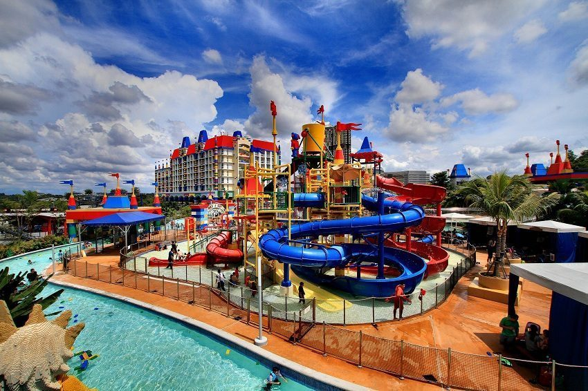
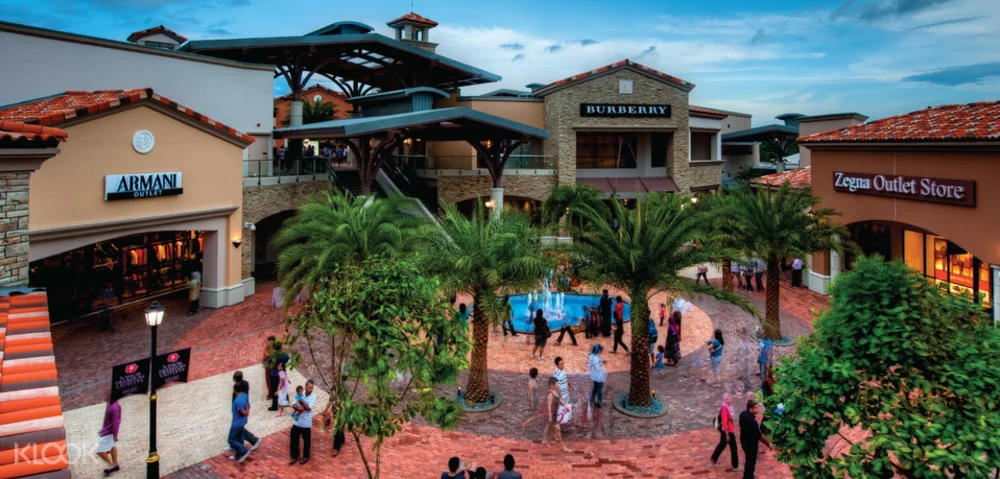
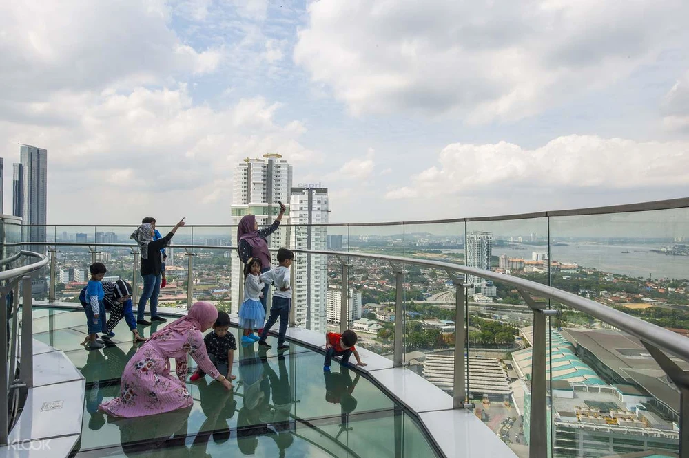
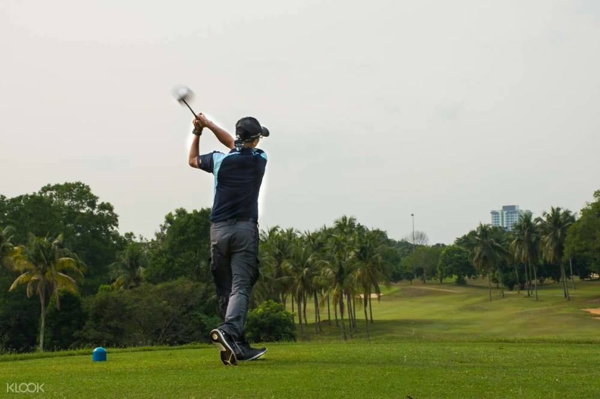
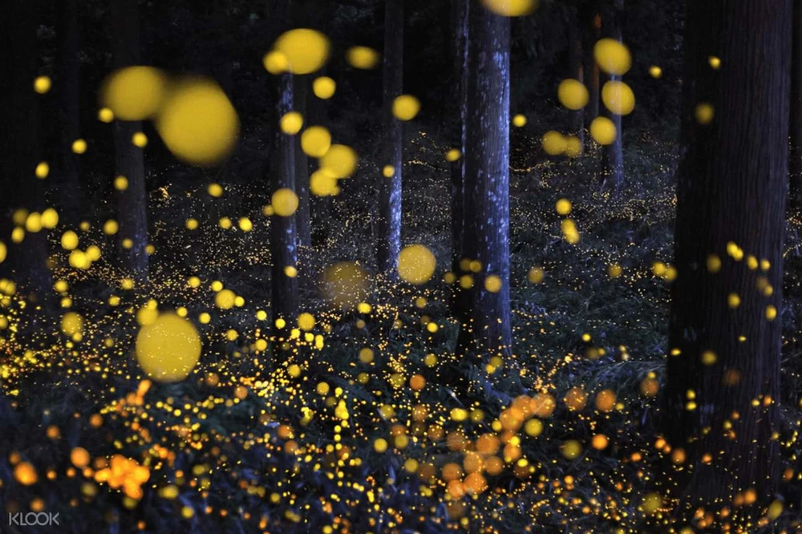
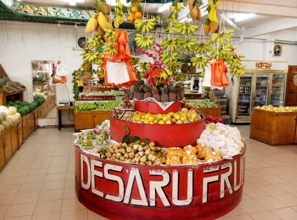

→Living in Johor
There are so many things to do and places to go in Johor. There are plenty of amazing nature parks and plenty of high-profile entertainment plazas and food courts filled with adventure. New Mountain promises a fascinating experience that will sweep visitors off their feet. These are just some of them.
→Legoland
LEGOLAND Malaysia Resort brings together a LEGOLAND Park, Water Park and Hotel in one LEGO® themed location. It is a family holiday destination with more than 70 hands-on rides, slides, shows and attractions. Almost everything is hands-on, so you can push, pedal and program, or steer, squirt and splash, your way through a truly interactive experience – and of course there’s building too.
LEGOLAND Malaysia has seven themed areas of attractions for all ages such as The Beginning, LEGO® Technic, LEGO Kingdoms, Imagination, LEGO City, Land of Adventure and MINILAND. It’s an inspirational land where the children are the heroes. From LEGO experiment centres to rollercoasters, the park is a day-long voyage of discovery for all the family.
The centre piece is MINILAND, where Asian landmarks have been recreated using more than 30 million LEGO bricks.  It’s an interactive world on a scale of 1:20, where people, trains and aeroplanes come to life at the touch of a button.
Andress and Contact:No 7 Jalan LEGOLAND, Bandar Medini Iskandar Malaysia 79100 Johor Bahru Johor,+6007-597 8888.
→Johor Premium Outlet
Johor Premium Outlet covers 45 acres and is home to about 130 designer brands. There are 3,000 car and 30 bus berths in the luxury town. Johor Premium Outlet is divided into two levels. The upper level is a luxury shopping mall, while the lower level has several restaurants in addition to the luxury shops for customers to eat. Designer goods include designer bags, designer clothes, designer sports clothes and sneakers, designer skincare products, designer glasses and restaurants.
Johor Premium Outlet JPO is strategically located at the junction of the North-South Avenue and the Second Lane Expressway, making it easy for customers from the native state of Johor and neighbouring Singapore to drive up and shop for designer bags and clothes. Johor Premium Outlet is a 30-minute drive away for Singaporeans, while Senai International Airport is a 10-minute drive away for international visitors, especially Indonesians.
Andress and Contact:200 Jalan Premium Outlets 81000 Kulai B Johore,+6007-590 9152
→Skyscape Johor Bahru
You don't have to go up the mountain to get a full view of the new mountain. Right at the top of Menara JLand JBCC, there is a glass walkway in the sky that allows you to get a full view of the new mountain. Although the view from the top is different, if you dare to climb up and look down at the clear glass at your feet, you are really brave!
In addition, there are various activities, such as skybridges, virtual reality, mini theater, interactive floor games and more. Let people enjoy the whole day.
Andress and Contact:Level 34, Menara JLand Johor Bahru City Centre,+6007-288 8723
→Ponderosa Golf & Country Club
Badminton, basketball, table tennis and football are the kinds of balls that we often come into contact with when we are young. Only golf is an activity that few people can play. If you are interested, or want to try out the so-called "rich man's game", Johor also has places where you can shake your sleeves for a few days and stay in a hotel until you are satisfied.
In addition, facilities in Ponderosa include a Chinese restaurant, pro shop, practice courts, tennis courts, and an Olympic-sized swimming pool. Mediterranean-style club compliments this Malaysian golf destination. Night golf under floodlights is also a good option.
Andress and Contact:3, Jalan Ponderosa 1/1, Taman Ponderosa 81100 Johor Bahru Johor,+6007-354 9999
→Kota Tinggi Firefly Park
In this age of technology, there are fewer and fewer places to see a swarm of fireflies, but Johor has preserved this mangrove forest for you to take a boat trip to find fireflies while listening to your guide teach you about them.
You can see fireflies and you can see the night or the moon. In fact, this place is very suitable for couples or families to come and watch or clock in. Because it's quiet, but it's also a great place to bond.
Andress and Contact:Lot 233, Jalan Johor, 81900 Kota Tinggi, Johor. 81900 Kota Tinggi Johor,+6011-1081 1641
→ Desaru Fruit Farm
Here you can eat while watching the orchard, there are a small zoo, carp pond, herbs and vegetables and other rich attractions, once you enter the garden can spend a whole day scenic spots, family size to very happy. You can pick your own fruit and get up close and personal with small animals. It's a great place for a family vacation or a weekend getaway!

Andress and Contact:92, 82200 Kota Tinggi Johor, Malaysia.,+607-822 5886
→How to Contact Us
Mailing Address:
Lebuh Cemerlang,
Desa Cemerlang,
81800 Ulu Tiram,
Johor, Malaysia.
Opening Hours:
Mon - Fri 9.00am – 5.00pm
Sat & Sun 9.30am – 3.30pm
Tel: +607-8636 888 or WhatsApp 011-13052008
For course enquiries, WhatsApp
011-13052008 (English)
011-13052015 (Mandarin)
011-35433040 (Diploma in Airline Services)
For Accounts-related matter, WhatsApp 011-13052006 (Finance)
For course information, please email: marketing@crescendo.edu.my
For International Students enquiry, please email: international@crescendo.edu.my
For Suggestions/Complaints/Grievances, please email:
feedback@crescendo.edu.my
For Scholarship/Bursary, please email:
studentsupport@crescendo.edu.my
[Note: For students coming from household income of less than RM4,000 per month.]
| |